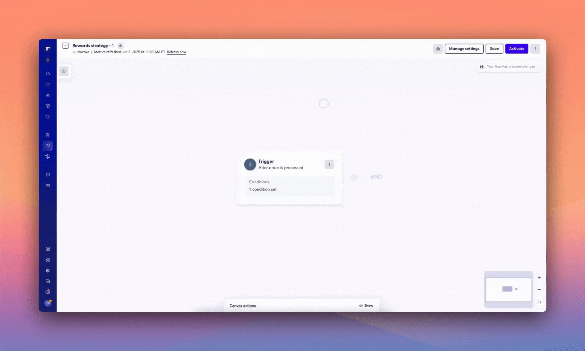
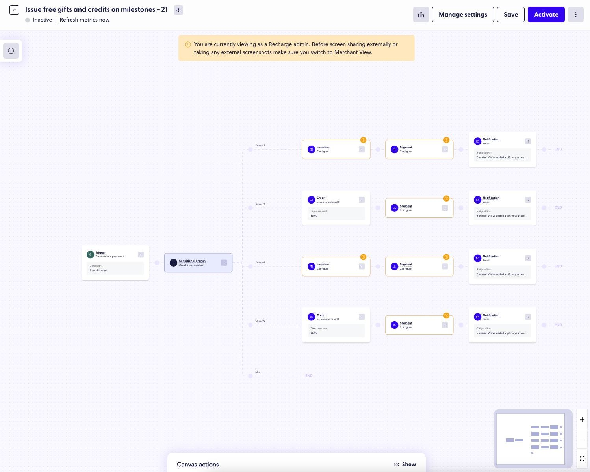
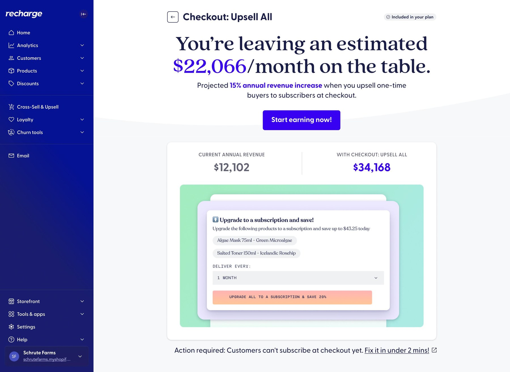
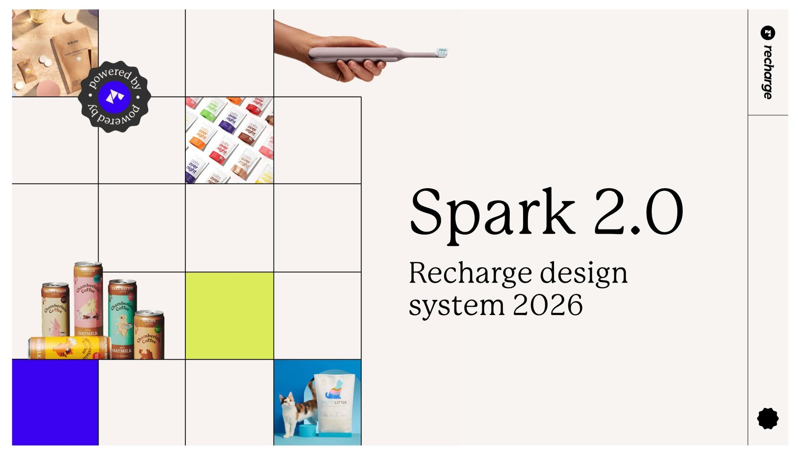
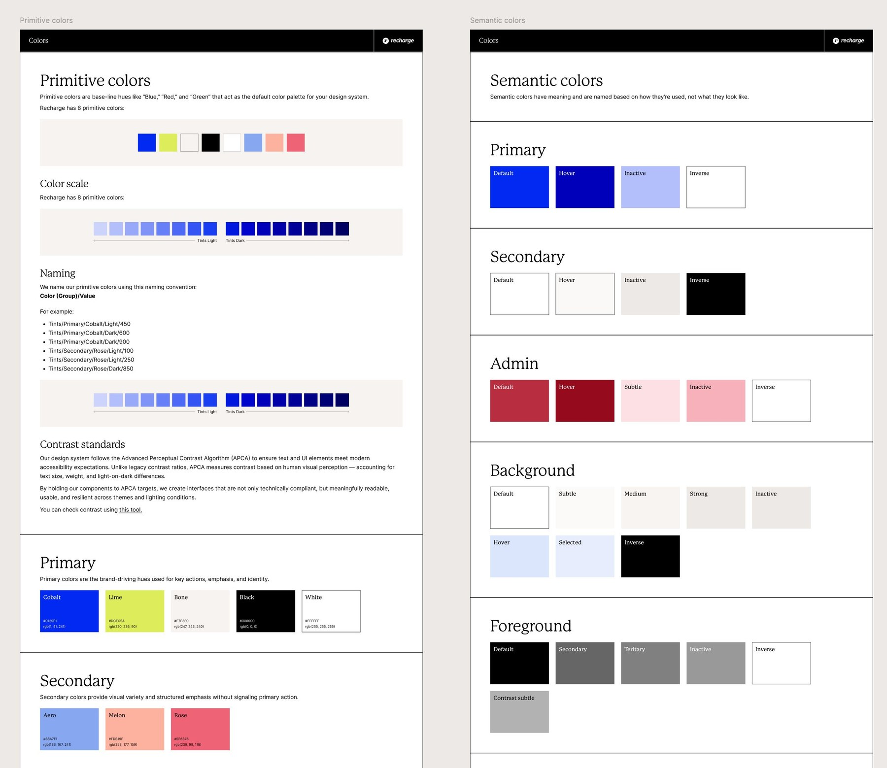

About me
My story, in motion.
Immigrated to Canada
Co-founded Rhizhome
Pride & Prejudice
Intro call template
Product designer with 7+ years of turning ambiguous problems in complex systems into simple solutions.
About me
Pride & Prejudice
Highlights
Pull the handle to move from the raw canvas of settings into a clearer wizard flow with smart defaults, review states, and visible progress.


Setup guidance breaks a heavy product job into small, confident decisions.
Useful defaults reduce blank-state anxiety and keep merchants moving.
Same-session deactivations dropped when the setup experience gave clearer affordances.

Owner mindset
Guided by data
4.2x higher same-session deactivation signal exposed where the wizard needed more clarity.
Design system 101


Component decisions, token rules, and documentation turn design judgment into shared product velocity.
AI-powered workflow
Claude helps turn messy inputs into sharper framing before design energy gets expensive.
Brands